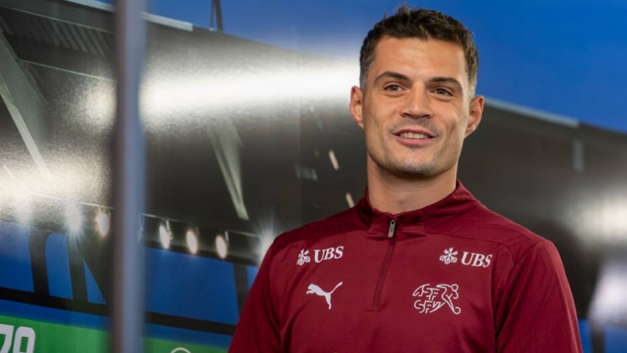

TELEGRAFI sh.p.k. Rr. Rexhep Mala, Aktash, Nr.34, Prishtinë, Kosovë info@telegrafi.com 038 224 093 – +383 48 222 355 Ky portal mirëmbahet nga kompania “Telegrafi”. Materialet dhe informacionet në këtë portal nuk mund të kopjohen, të shtypen, ose të përdoren në çfarëdo forme tjetër për qëllime përfitimi, pa miratimin e drejtuesve të “Telegrafit”. Për ta shfrytëzuar materialin e këtij portali obligoheni t’i pranoni Kushtet e përdorimit. Të gjitha të drejtat janë të rezervuara © 2006-2022 Portali Telegrafi